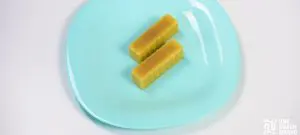

Brownies Espaciales

Descripcion
El brownie cannabico es una deliciosa variante de la
receta tradicional, la cual contiene THC, entre otros cannabinoides. Se
trata de uno de los postres cannábicos más fáciles de cocinar Aquí os
dejamos esta sencilla y deliciosa receta para prepararlo.
Ingredientes
- 150 g Chocolate en polvo
- 90g Mantequilla de marihuana
- 1 taza Azúcar
- 1cda Esencia de vainilla
- 1/2 taza Harina
- 4 Huevos
- 70g Nueces en trocitos pequeños
- Chocolate en trozos
Paso a Paso....
-
Existen diversas recetas para cocinar un deliciosos
brownies cannabicos. Entre ellas se encuentra la que se
detalla a continuación. Para elaborarlo de forma sencilla se deben
seguir los siguientes pasos:
-
Para esta receta se usará
90g de
Mantequilla cannabica, por lo que es interesante tenerla preparada 24 horas antes de
preparar este plato.

-
Poner a precalentar el horno. Lo primero que se debe hacer es derretir
los 150g Chocolate en polvo al baño maría, junto con la
mantequilla.
-
Mientras tanto se baten los 4 Huevos y se añade tanto
1 taza Azúcar como
1cda Esencia de vainilla. Una vez esté bien mezclado se
agrega 1/2 taza Harina y se remueve bien.
-
A continuación,
añade a la mezcla la mantequilla y el chocolate derretido
mezclándolo todo bien
hasta que quede una textura suave y sin grumos.
-
Por último, agrega los
70g Nueces en trocitos pequeños y acaba de mezclar todo
bien.
-
Ahora se debe cubrir un recipiente apto para horno con papel vegetal, y
echar la mezcla.
-
Decora el brownie de marihuana por encima con las Virutas de chocolate.
(Opcional)
-
Una vez listo,
se mete al horno a unos 150ºC durante 40 minutos
aproximadamente. Es conveniente que se vaya comprobando cuando está listo para que no
se queme. Para ello, se puede utilizar un palillo
metiéndolo en el centro del pastel y si sale limpio significa que ya
está listo.
- Cuando se enfríe, ya estará listo para comer.
Volver al inicio